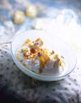
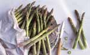

La ricetta della settimana

Titolo:
Glassa
Categoria:
varie
Ingredienti:
300 zucchero a velo-30 succo limone-30 acqua
Preparazione:
in una ciotola con le fruste amalgamare tutti gli ingredienti

Home page